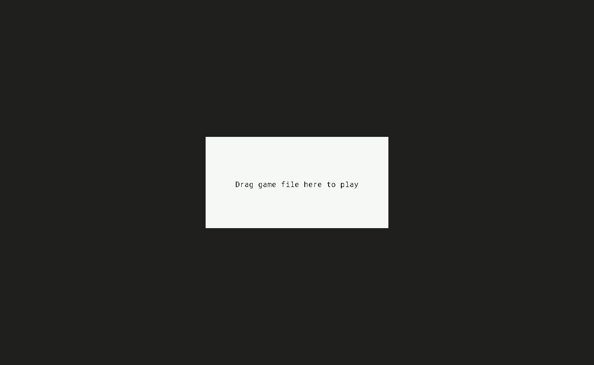

A tool for writing text-based adventure games
Texte was forked from vi's minimalist presentation tool Visor. Games are written on .txt files following a simple syntax.
$Room1til: Room 1con:+ This is the first room+ #[Go forth>Room2]$Room2bg: #202020col: #f8f8f8til: Room 2con:+ This is the second room+ #[Go back>Room1] $room - Set a roomtil - Title attributecon - Room contentsbg - Background colourcol - Text colour+ - New line#[Action>Link] - Action button DL2 9A1 19.3D